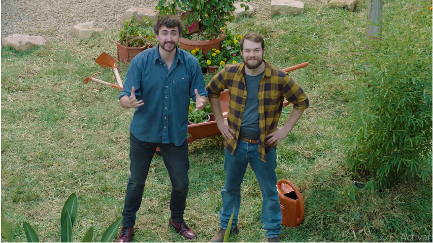
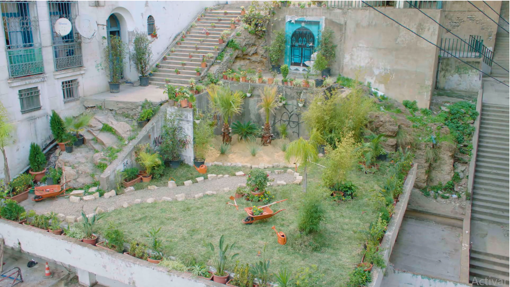

Chesterfield llevó a cabo diferentes proyectos alrededor del mundo con el objetivo
de generar cambios positivos a través de la creatividad.
Partiendo siempre de una
problemática, creemos que con ideas creativas podemos llegar a una solución que
genere un cambio positivo.
Y ¿qué mejor manera de hacerlo que mejorando el entorno?

Para ello, decidimos convertir distintos puntos de la ciudad en espacios
cada
vez más verdes.

En un mundo en el que no se cuestiona nada y todo sigue la misma corriente,
nosotros decimos: sobran las razones para ser
diferentes.
Hagamos de cada kiosquero, ¡Un
protagonista del
cambio!